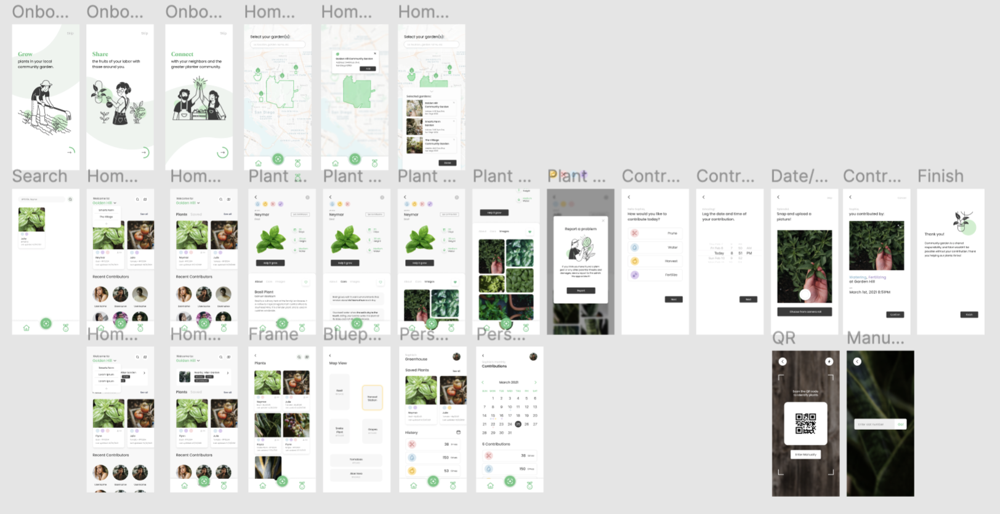
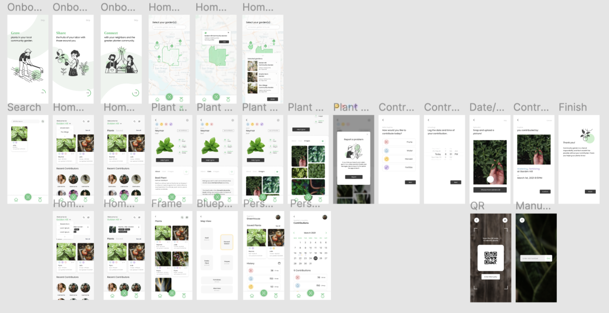

Eden
 



ROLE:
Full Stack Developer
TECHNOLOGY:
Swift, Go, CockroachDB, GCP
ACCOMPLISHMENTS:
SDHacks 2021 Overall Winner!
Best use of Google Cloud!
Tickets to Pinnacle 2021!
Wolfram Alpha Prize!
COMPANY:
SDHacks 2021
DEVPOST:
Inspiration:
Inspired by the close-knit communities in San Diego, we created Eden, an app that helps to build green spaces in urban communities. Eden allows residents to grow plants, spend time with others in a safe and supportive environment, bring home healthy produce from the garden, and be active outdoors. These activities improve the mental health of residents while increasing the eco-capital of cities.
What it does:
Eden helps build green spaces in urban communities by allowing residents to grow plants, spend time with others in a safe and supportive environment, bring home healthy produce from the garden, and be active outdoors. This safe and fun activity contributes positively to the mental health of residents while increasing the eco-capital of cities.
How we built it:
We are hosting our API here. We began by researching the problem space and designing using Figma. We designed our app with a Go backend and Swift frontend. For the Golang backend, we created REST APIs and used GORM as our ORM to interact with CockroachDB. We used Google Cloud Platform to host our backend server, serving an endpoint with our domain iamgroot.space. Our Swift frontend uses SwiftUI and Google Maps API for displaying maps, pins and coordinates.
Challenges we ran into:
In terms of product design, some potential risks we foresee with this idea are theft and vandalism. We aim to mitigate these risks by creating a rotation care system to prevent jealousy and spite, and a harvest area for ripe fruits open for the public to take. In terms of working together as a team, we overcame disagreements and in doing so learned to communicate more constructively with each other.
Accomplishments that we’re proud of:
We’re really proud of the amazing designs we created for the app. We’re also really happy that we learned so many new technologies in the process.
What's next for FridgeSpace:
Future steps for Eden include creating an administration portal for those who run the community gardens and help them organize and keep track of government paperwork as well as update them on the status of the gardens. We also plan to improve the user flow and refine key features.